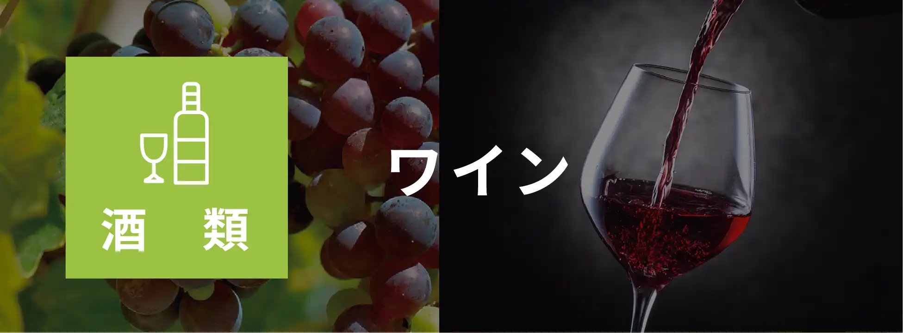

私たちの技術が日本産知財を守り
私たちの技術が日本産知財を守り
未来の日本の国益を守ります。
- DNA検査により違いを発見
- TVで話題になった熊本県のアサリは、
DNA検査により外国産の偽物と証明。

- DNAが同じでも特定可能
- DNAだけではなく、育った環境情報も
データ化することにより産地を特定可能。
生産地の土壌や水など固有情報を採取し指紋化。
肉や野菜の一部から生産地域が特定可能。
戦略鉱物 卵 森林 金
ダイヤモンド
★日本への輸入品の原産国調査も可能です。
TECHNOLOGY
ダイヤモンドの
産地鑑定技術を応用

産地鑑定技術を応用して、商品に含まれる成分を分析し、農家、漁業者、鉱山、農園に至るまで、製品の原産地を証明します。私たちの産地証明ソリューションは加工前・加工後の産地証明に有効です。
- 金（Au）の採取地を特定
-
テクノロジーを使用すると、金および金製品（歴史的工芸品、通貨）の起源を鉱山に遡って特定できます。 鋳造された金でも査定可能です。

金のサンプルを採取。レーザーで金を直接分析します。
-
金の組織を分析。微量に存在する汚染元素と同位体を測定します。

元素と同位体の組み合わせによる独自のプロファイル（化学指紋）が得られます。
初回データ作成
収穫回数や生産地域などの情報から最適なプランをご提案します。
-
- お問い合わせ
- 弊社へお問い合わせ
-
- ヒアリング
- 農作物・生産物 / 畑数や地域 / 年間生産量
年間生産数 など
-
- 現地調査サンプリング
- 土壌や環境情報を取得するために畑や
工場に赴き調査

- 指紋情報の策定と納品
- 情報を精査してマップ情報を作成。
偽物と照合比較の為の情報を作成完了

検証プロセス
検証が必要な場合、各国のエージェントと協力して対応可能です。
-
- お問い合わせ
- 弊社へお問い合わせ
-
- 対象地域にてサンプリング
- 対象国でサンプリング。ラボへ発送
-
- 分析とレポートの提出
- 右図の様なレポートとグラフ提出
日本から盗まれ海外で育てられた種子や苗は、
DNAが同じで日本産であったとしても
「日本の地で育ってない」事を証明可能な革命的な技術になります。
正規輸入者と輸入国に調査方法を提供し
差押えの為の仕組みづくりが可能

CASE STUDY
［事例の一部］
海外で差し押さえ等に成功した実績のある技術です。
-
世界的に３つの主要生産地域があります（下図は生産地の土壌情報などからグラフ化したもの）。各点が畑の情報になり地域別に近しい所にある事が分かります。珈琲豆から情報を抽出する事で、どこの産地の物かを特定可能です。また自然変動を考慮し数年に１度定期的に情報を更新しています。
-

下図は、アワビがどこの海域で採取されたかを調査、視覚化したものです。国産とうたう出所不明のアワビを調査した結果、５キロ単位で離れた湾で育ったアワビに対し「どの湾で育った」という証明と偽物である証明が出来ました。
- 
ワインなどのお酒においても、畑の特定だけではなく生産工場の特定も可能です。海外では、科学的技術を使用した産地認定などにより、偽物の混在を防ぎ国産ブランドを守る取組を行っています。近年、高額日本酒のビンがC2Cマーケットで販売され、中身が入れ替えられシンガポールにて販売されるケースもあります。
-
シンガポール政府の希望に応え、市場における養豚場や餌、屠殺場などをデータ化し検証します。

SURVEY
DNA+畑などの固有地質情報

土地に含まれる微生物や金属などの情報をデータ化しブランドの指紋情報を作ります。生物のDNAだけではなく、育った環境情報もデータ化し照合できるので、盗まれた種や苗でDNAが同じでも「日本で生産された物か？」という証明が可能になります。
証明が可能な主なもの
戦略鉱物 卵 森林 金
ダイヤモンド
★日本への輸入品の原産国調査も可能です。
世界中から調査可能
これまで日本輸入時に怪しいと思っても調べる方法はありませんでした。各国のエージェントと協力する事で、偽物と思われる物をサンプリングし７日前後で判定が可能になります。